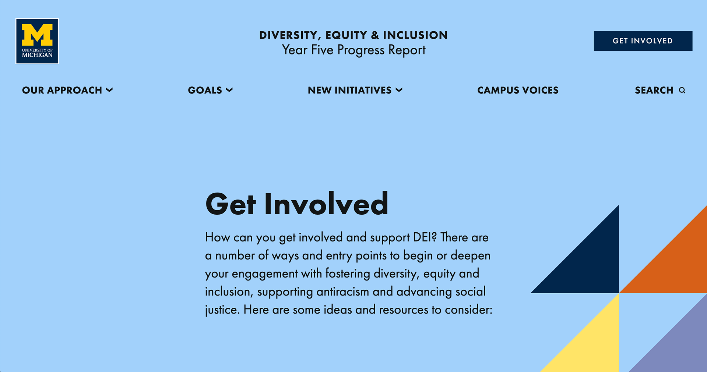
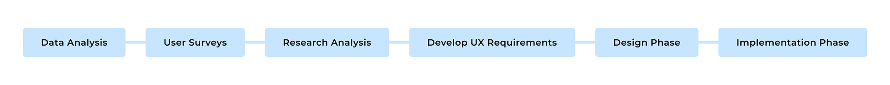

ODEI Annual Progress Report
UX Research & Design for the “Annual DEI Progress Report” Website, University of Michigan Office of Diversity, Equity & Inclusion (ODEI)

I worked as a UX Web Developer for the University of Michigan Office of Diversity, Equity & Inclusion (ODEI). My role was to assist with the evaluation and revision of the annual DEI Progress Report website for the campus-wide report on Year Five of the DEI Strategic Plan, working collaboratively with web development professionals from Michigan Creative and ODEI Marketing & Communications.
Problem Statement
Design solutions to create an Annual Progress Report website aimed at providing transparency regarding diversity efforts — including displaying lots of information — while making sure the website remains clean, simple, intuitive, and easy to navigate.
Process
This meant evaluating usage data from the previous year’s report website, conducting user surveys, and developing UX requirements for an information architecture catered to the target user audience: students.
My contribution to this project:
- Assisted with refreshing and revising the web-based DEI progress report to make it more user-friendly and allow for easy content consumption and interactivity, with an emphasis on student users.
- Analyzed existing data and conducted student focus groups to inform recommendations for design changes and new features.
- Collaborated on strategy, design and development of web-based and mobile-friendly content using existing text, data, image and video assets.
- Designed and developed select new features in collaboration with the team using the WordPress platform.
- Helped ensure consistency, accuracy and compliance with required U-M standards for web and mobile products.
Research Phase
I conducted interviews and user testing, on my own, to evaluate the Year 4 DEI Annual Progress Report in 2020, in order to develop recommendations for the Year 5 report in 2021.
My Top Recommendations
Based on my research, I determined the primary improvement that should be made, if nothing else, is to create a summary homepage that captures all of the most important ideas and information in a concise and readable way and uses language that all people can understand, whether they’re deeply involved in DEI or not — so the user can choose to dive deeper into the areas they’re most interested in, without sifting through everything else.
Design and Prototyping Phase
All design comps were produced by Michigan Creative. I designed the “Get Involved” page myself in Figma. Below, you can see the report’s Homepage, the “Campus Voices” page, and the “Get Involved” page in the final implemented site — I personally assisted with implementation of the entire site through WordPress.
Open "Year 5 DEI Report" in Figma →
Open "ODEI Design Explorations" in Figma →
Project Gallery

Reference Materials
- Research results (Google Doc)
- Full recommendations (Google Doc)